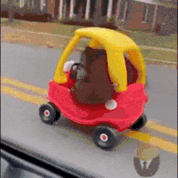
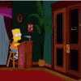

43 · 12 · 3 시간 전 · 원문
수집 당시 댓글 12개
옆집고양이엉덩이 · 13 시간 전
어디로 가냐
↳ 답글 · XiJinPink · 5 시간 전
붐게
정중한싸대기 · 13 시간 전
암막커튼 · 13 시간 전
첨벙 첨벙 첨벙
주가하락 · 8 시간 전
뒷뜰 · 5 시간 전

한식사랑나라사랑 · 3 시간 전
잘 달리네
라면 · 3 시간 전
오늘은 이걸로
상냥퍼리소녀 · 3 시간 전
레츠카이오?
솜털보지 · 3 시간 전
노들나루 · 3 시간 전

dfdjdke · 3 시간 전


어디로 가냐